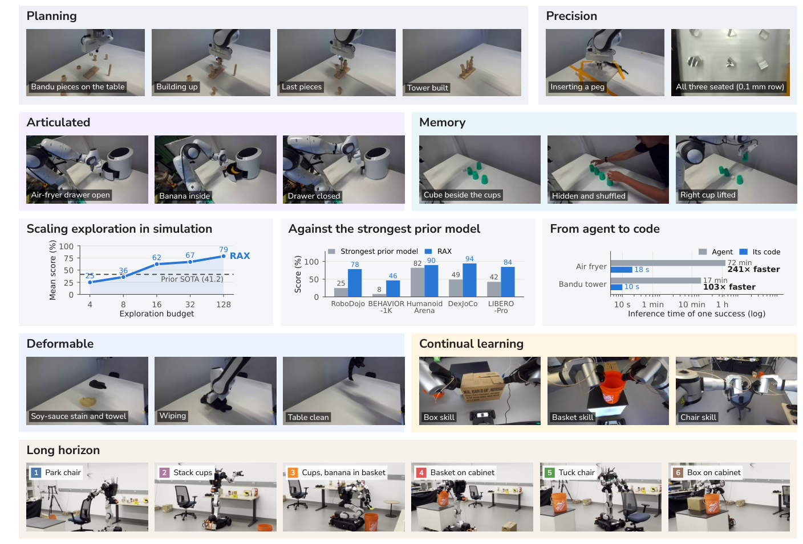
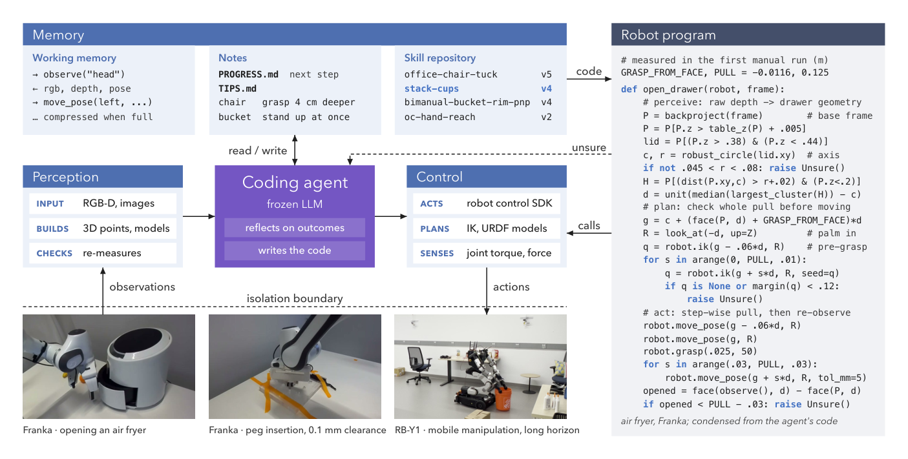

RAX 深度调研笔记
速览
| 项 | 内容 |
|---|---|
| 一句话 | 冻结通用 coding agent 直接连机器人感知/控制接口，把"在线探索"做成 scaling law：成功决策编译成程序、版本化入库，能力随探索预算单调增长 |
| 冻结 | LLM 参数、低层控制器、backend 硬件栈、任务无关接口——全程不训练任何策略，无 VLA |
| 演化 | 感知流水线、物体模型、规划逻辑、程序参数、版本化技能库 |
| 头部结果 | 五大仿真基准平均超 SOTA +37.4pp；真机零演示 <2h 探索掌握 0.1mm 精密插孔 |
| 开源 | 框架 + 技能库 + 全部实验 session 日志（HuggingFace） |

① 动机
- 机器之心的提法：具身智能都在等"GPT 时刻"（堆数据、堆遥操作），但人类靠练习-观察-纠错-保留有效做法获得技能。作者押注：机器人的 o1 时刻来自 Scaling Exploration，而非 Scaling Data。
- 以前卡在哪：遥操作扩数据贵且慢；端到端 VLA 换本体/换布局就崩；此前 CaP agent 只在单任务内 debug，经验不跨任务复利。
- 核心命题（作者原文方向）："模型参数保持冻结，机器人能力随着探索持续增长"——探索量（episodes 预算）就是新的算力轴。
② 架构（§3–4，Fig 2/4）

"认知架构"五件套：
| 模块 | 内容 | 来源/性质 |
|---|---|---|
| 编码 agent | 冻结 LLM（Claude Code / Codex），接任务描述 + 少量目标图 + episode 预算 | 冻结 |
| 多模态感知 | RGB、深度、相机参数、力信号；agent 自己写 3D 点云/物体铰接模型拟合程序 | 探索涌现 |
| 控制接口 | 机器人 SDK 以 MCP 工具暴露：IK、URDF、碰撞感知运动规划、robot-only preview | 冻结 backend |
| 自主机器人程序 | 决策序列编译成独立 Python 程序（前置条件→动作→验证闭环），高频执行；不确定时 raise Unsure() 把控制权交还 agent | 演化 |
| 持久记忆三层 | 会话内 scratch pad（上下文压缩）→ 跨任务工作区 → git 式版本化技能库（每 session 一分支，验证后合并） | 演化 |
前后端分离（§4.1）：agent 与程序只能过工具接口，碰不到控制器/驱动/安全机制——多本体支持"by construction"。
③ 机制：探索循环与技能入库（§3.3–3.5）
- 空工作区起步，episode 预算 N 内逐步工具调用探索（慢，LLM 推理在环）。
- 每步观察→诊断失败→改感知例程/运动计划/执行检查。
- 成功后把决策序列编译为模块化程序，像软件一样测试、调试、版本化。
- 入库门槛：只有无监督（无人值守）成功执行的技能才进仓库，且必须携带：可执行代码 + 成功运行日志/证据 + 明确前置条件 + 验证检查点。
- 并行化：多 agent × 多环境同时探索（如 4×4），session 产物在版本库里竞争合并。
论文笔记作者（davidlxu）给的形式化（非论文训练目标）：P_{k+1} = Revise_LLM(P_k, E_k, M_k)，a_t = P_k(o_{≤t})。
④ 数据与基准（§5.2；数字 tex 已验）
| 基准 | RAX | 最强基线 | 备注 |
|---|---|---|---|
| RoboDojo（7 任务） | 78.3 | VPP2 24.9 | pour by language 100.0；sweep blocks random 71.7 vs 8.0 |
| BEHAVIOR-1K（6 长程家务） | Q-score 46.5 | RLC 8.2 | 128 探索 episodes；loading the car 100 |
| HumanoidArena（Unitree G1，7 任务） | 89.8 | WB-WAM 81.9 | 仅 3 个演示 vs WB-WAM 100 演示；52.1%（2eps）→80.7%（32eps） |
| DexJoCo（11 任务） | 96.7 | ME-Dex 65.3 | 2eps 31.9→8eps 86.9→32eps 96.7 |
| LIBERO | 98.5 | VPP2 98.8 / Cosmos 98.5 | 持平（标准 LIBERO 已饱和） |
| LIBERO-Pro（位置扰动） | 零适应 76.0 → 5eps 适应 84.4 | VPP2 42.3；ASPIRE 63.2 | 平均领先 SOTA +37.4 |
④A 主结果对比（论文 Table 1 RoboDojo + Table 5 LIBERO，tex 已验）
RoboDojo 探索预算 scaling（成功率 %，预算 4→64）
| 任务 | VPP2 | Simate | RAX(预算4) | RAX(8) | RAX(16) | RAX(32) | RAX(64) |
|---|---|---|---|---|---|---|---|
| Plug charger | 16.7 | 29.3 | 26.0 | 94.0 | – | – | – |
| Pour by language | 0.0 | 0.0 | 94.4 | 100.0 | – | – | – |
| Make toast random | 38.0 | 7.7 | – | – | 2.5 | 31.7 | 47.2 |
| Sweep blocks random | 1.3 | 0.0 | – | – | 53.3 | 68.3 | 71.7 |
LIBERO / LIBERO-Pro（50 demos 基线 vs 零演示）： LIBERO avg——OpenVLA 76.5 · π0 94.2 · π0.5 96.9 · VPP2 98.8 · RAX 98.5（0 demos）；LIBERO-Pro（位置扰动）avg——π0.5 20.8 · VPP2 42.3 · ASPIRE 63.2 · RAX 76.0（无适应）/ 84.4（适应后，0 demos）。
④B 核心消融（Table 16 预算消耗 + Table 7 深度感知，tex 已验）
- 探索预算 scaling（DexJoCo 会话数）：budget 2→32，interactive 会话 11→179，提交率 22/22→280/352——在线探索随预算近似线性扩展，无饱和；
- 深度 vs RGB-only（平均成功率）：RGB-D 31.1 vs RGB-only 13.8（+17.3）——毫米级接触任务深度不可或缺；
- 真机 Franka 精密插孔 0.1mm：零演示，纯探索程序合成（Table 8：agent 动作→全自动程序）。
⑤ 信息流（一个回合）
任务 + RGB-D + 力信号 ──▶ 冻结 coding agent（慢速在环）
├─ 写/调感知程序：深度→3D 点云→物体几何/铰接轴/可操作部位
├─ 经 MCP 工具：IK → 碰撞感知规划 → preview → 执行
├─ 失败 → 诊断 → 改程序（或 raise Unsure() 交还）
└─ 无人值守成功 ──▶ 编译为独立程序（前置条件+动作+验证）──▶ git 分支合并入技能库
之后：同类任务 ──▶ 检索技能 ──▶ 纯程序高频执行（LLM 不在环），18 秒 vs 72 分钟
关键解耦：学习发生在 agent 在环时，执行发生在程序自主时；backend 保留最终安全权（joint limits、operator arming），agent 生成的碰撞检查只是补充。
⑥ 例子（真机 §5.1/§14）
- 空气炸锅取香蕉：首次 agent 在环成功要 72.3 min 推理 / 262.4k tokens；编译后的程序拟合抽屉轴与把手、检查可达性、短增量拉出——无人值守 18 秒推理 + 2.5min 机器人时间（241× 推理加速，注意这是推理时间比不是机器人速度比）。
- 0.1mm 精密插孔（ManipulationNet）：零动作演示。
- RB-Y1 长程物流：拉椅子→叠杯→取香蕉→装篮→搬运→归位，6 子任务复用早前 session 技能。
- 涌现行为（§5.4）：主动感知（用夹爪探针量透明板 24.7mm vs CAD 25mm）、碰撞后自动加安全扫掠检查、主动请操作员改布局来测泛化。
⑦ 实验·消融·局限（§5.3）
- 探索 scaling：所有基准上性能随预算（2→128 eps）单调增长——这是"scaling law"主张的证据主体。
- 并行化：Claude Code 4×4 在 4.9h 得 92.2 vs 单 agent 13.7h 得 63.3。
- 深度消融：RGB-only 平均掉 17.3 分（域随机化任务 31.1→13.8）。
- 零动作演示：RAX⋆（仅保留视觉演示）81.9% 恰好追平 100 动作演示微调的 WB-WAM。
- 局限：深度缺失大掉分；loco-manip 与域随机化需超大预算（make toast random 64eps 仅 47.2）；真机每 episode 耗操作员时间。
- 第三方读报（davidlxu）提醒：37.4 平均值混合了五种计分口径与任务子集；部分评测仍有 agent 在环或提供演示信息，解读"autonomous/无演示"要看细节。
⑧ 与另外五篇的关系
- 与 CaP-X：CaP-X 证明"测试时计算可补低层原语鲁棒性"，RAX 把这条推到极致（探索预算即 scaling 轴）。
- 与 ASPIRE：同台竞技（LIBERO-Pro 84.4 vs 63.2）；ASPIRE 重"看得见失败"的 trace 与 verifier 门控，RAX 重"版本化程序库 + 编译加速 + 并行探索"。
- 与 HarnessPAI/Zetta：那两篇把 VLA/WAM 请回动作层（混合/VLA 为主）；RAX 是最激进的无 VLA 纯代码路线，反证"VLA 不可替代"需要重新论证。
- 与 RATs：RATs 在任务到来前自玩攒技能（内在动机），RAX 在任务期探索（外在任务驱动），是"何时探索"的两个端点。